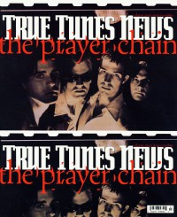

CMnexus
:
Contemporary Christian culture, music, and media.
Magazines
Profiles
Dove Awards
cmnexus.org
CM
nexus
→
Profiles
→
M
→
Dan MacIntosh
Dan MacIntosh
Writing Credits: 3 of 11
< -- Previous
Next -- >
1
2
3
4
5
6
7
8
9
10
Writing credits listing
Jul 1993 in
Syndicate
8.4
The Kry
-
I'll Find You There
Aug 1993 in
CCM
16.2
Faces:
T-Bone
Nov 1993 in
CCM
16.5
"In The Spin Cycle"
Hoi Polloi
Nov 1993 in
Heaven's Metal
#44
"Respectfully Rez"
Resurrection Band
Dec 1993 in
CCM
16.6
Faces:
Susie Luchsinger
Faces:
Ian Eskelin
Mar 1994 in
Heaven's Metal
#46
"Envision That - Imagine This"
Imagine This
"Making A Pass-A-Fist"
Passafist
May 1994 in
Syndicate
9.1
Spotlight:
Riki Michele
Steve Taylor
-
Squint: Movies From The Soundtrack
Passafist
-
Passafist
The Browbeats
-
Unplugged Alternative
May 1994 in
Heaven's Metal
#47
"Dogs Having Their Day"
PFR
Jul 1994 in
CCM
17.1
"Greg and Rebecca Sparks Dig Their Roots In"
Greg and Rebecca Sparks
Jul 1994 in
Syndicate
9.2
Pam Mark Hall
-
Paler Shade
Jul 1994 in
Heaven's Metal
#48
"Digging Up Six Feet Deep"
Six Feet Deep
Aug 1994 in
CCM
17.2
"Benjamin"
Benjamin (pop)
Aug 1994 in
Syndicate
9.3
Spotlight:
Pam Mark Hall
Sep 1994 in
Heaven's Metal
#49
"The Future According To Frankie"
Under Midnight
,
Future Shock
"Understanding The Blues"
Blues
:
Glenn Kaiser
,
Darrell Mansfield
,
Greg Chaisson
,
Chris Lizotte
,
Sleepy Ray
Oct 1994 in
Syndicate
9.4
Spotlight:
20/20 Blind
"Terry Taylor: He Won't Go Away"
Terry Scott Taylor
The Swirling Eddies
-
Zoom Daddy
"Peter Case Sings Real Well"
Peter Case
Nov 1994 in
Heaven's Metal
#50
"MxPx Is Pokin' At Ya!"
MxPx
"Riding The River Disturbance"
Deliverance
Jan 1995 in
Heaven's Metal
#51
"Shooting From The Heart"
Amy Wolter
1995 in
Syndicate
#44
"Roe Knows"
Michael Roe
"Everybody Loves Jon Gibson"
Jon Gibson
Mar 1995 in
Heaven's Metal
#52
Strongarm
Mike Delaney
, "beats" in music,
Rad Rockers
May 1995 in
Heaven's Metal
#53
"Landing On Venus"
Fell Venus
"Comeback Kids"
Neon Cross

Sum 1995 in
True Tunes News
7.2 / 3
The Prayer Chain
Jul 1995 in
Heaven's Metal
#54
"Z Music Television Profile"
Z Music Television
,
Ken Yates
"The New Petra!"
Petra
Nov 1995 in
CCM
18.5
"'Grinnin' Barrett"
Brian Barrett
Dec 1995 in
HM
#56
"Blues Come In Many Shades"
Rex Carroll
,
Darrell Mansfield
,
Chris Lizotte
,
Craig Erickson Project
Feb 1996 in
HM
#57
"He, The Person"
Ken Tamplin
"Diving In"
Raspberry Jam
Apr 1996 in
HM
#58
The 77s
Dogs of Peace
May 1996 in
7ball
#6
Poor Old Lu
Bankshots:
Peace586
The Supertones
-
The Adventures of the O.C. Supertones
Sum 1996 in
HM
#59
The Supertones
Roadside Monument
Jul 1996 in
CCM
19.1
"Saltbox Tour, Six Flags Magic Mountain, Valencia, CA"
Petra
,
Whiteheart
,
Johnny Q. Public
Jul 1996 in
7ball
#7
Bankshots:
Every Day Life
Michael Roe
-
The Boat Ashore
Writing Credits: 3 of 11
< -- Previous
Next -- >
1
2
3
4
5
6
7
8
9
10
CMnexus
(noun)
The magazine index
of modern music
and Christianity
© 2011 CMnexus. Last updated April 2021.
Contact:
Rants and other correspondence to:
editor -AT- cmnexus
-DØT- org
About